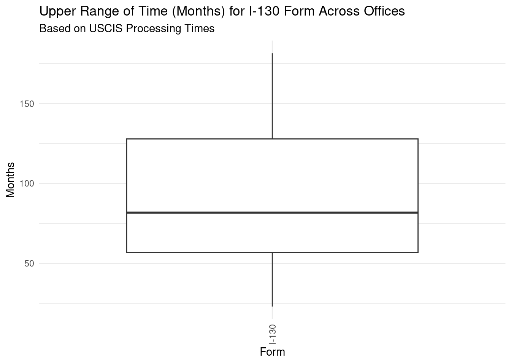
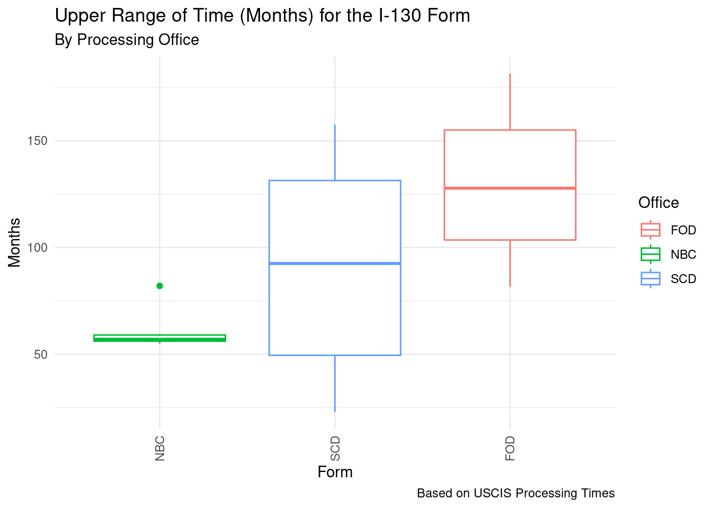
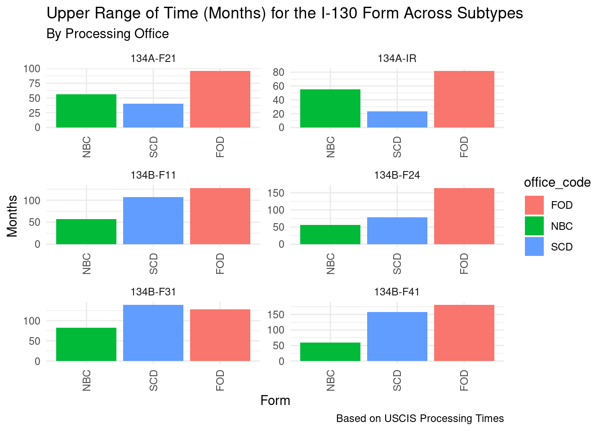

The uscis package provides tools to access and analyze USCIS (United States Citizenship and Immigration Services) processing times data through their API. This vignette demonstrates how to use the package to retrieve information about forms, their processing locations, and current processing times.
Setup
First, let’s load the required packages:
Basic Usage
Initialize Session
First, we need to initialize a session with USCIS to get the necessary cookies:
uscis_init_session()
#> [1] TRUEAvailable Forms
Let’s retrieve the list of available USCIS forms:
forms <- uscis_forms()
head(forms)
#> form_description_en
#> 1 Application for Replacement/Initial Nonimmigrant Arrival-Departure Document
#> 2 Petition for a Nonimmigrant Worker
#> 3 Petition for a CNMI-Only Nonimmigrant Transitional Worker
#> 4 Petition for Alien Fiancé(e)
#> 5 Petition for Alien Relative
#> 6 Application for Travel Documents, Parole Documents, and Arrival/Departure Records
#> form_description_es
#> 1 Solicitud para Reemplazar/Obtener Documento de Entrada/Salida de No Inmigrante
#> 2 Petición de Trabajador No Inmigrante
#> 3 Petición de Trabajador Transicional No Inmigrante – Solo de CNMI
#> 4 Petición de Prometido(a) Extranjero (2)
#> 5 Petición de Familiar Extranjero
#> 6 Solicitud de Documentos de Viaje, Documentos de Libertad Condicional y Registros de Entrada/Salida
#> form_name
#> 1 I-102
#> 2 I-129
#> 3 I-129CW
#> 4 I-129F
#> 5 I-130
#> 6 I-131Form Types
For each form, we can get its available subtypes:
form_types <- uscis_form_types(forms)
head(form_types)
#> form_name form_key form_type
#> 1 I-102 142 142
#> 2 I-129 137-E 137-E
#> 3 I-129 137-E3 137-E3
#> 4 I-129 137-H1B1 137-H1B1
#> 5 I-129 137-H1B2 137-H1B2
#> 6 I-129 137-H1B3 137-H1B3
#> form_type_description_en
#> 1 Initial issuance or replacement of a Form I-94
#> 2 E - Treaty traders and investors
#> 3 E3 - Specialty occupation workers from Australia
#> 4 H-1B - Specialty occupation - Visa to be issued abroad
#> 5 H-1B - Specialty occupation - Change of status in the U.S.
#> 6 H-1B - Specialty occupation - Extension of stay in the U.S.
#> form_type_description_es
#> 1 Emisión o reemplazo inicial del Formulario I-94
#> 2 E - Comerciantes e inversionistas
#> 3 E-3 para Trabajadores Australianos en Trabajos Especializados
#> 4 H-1B - Ocupación especial - visa que se expedirá en el exterior
#> 5 H-1B - Ocupación especial - cambio de la condición migratoria en los E.E.U.U.
#> 6 H-1B - Ocupación especial - extensión de la estadía en los E.E.U.U.Processing Offices
Now let’s get the offices that process each form type:
form_offices <- uscis_form_offices(form_types)
head(form_offices)
#> form_name form_type office_code office_description
#> 1 I-102 142 CSC California Service Center
#> 2 I-102 142 NBC National Benefits Center
#> 3 I-102 142 NSC Nebraska Service Center
#> 4 I-102 142 SSC Texas Service Center
#> 5 I-102 142 ESC Vermont Service Center
#> 6 I-129 137-E CSC California Service CenterProcessing Times
Finally, let’s get the current processing times. For this example, let’s just look at a subset of forms to keep the API calls manageable:
# Let's look at just I-130 forms as an example
i130_offices <- form_offices |>
filter(form_name == "I-130")
processing_times <- uscis_processing_times(i130_offices)
head(processing_times)
#> # A tibble: 6 × 13
#> form_name form_subtype office_code publication_date form_note_en form_note_es
#> <fct> <fct> <fct> <chr> <lgl> <lgl>
#> 1 I-130 134A-F21 SCD October 18, 2024 NA NA
#> 2 I-130 134A-F21 NBC October 18, 2024 NA NA
#> 3 I-130 134A-F21 FOD October 18, 2024 NA NA
#> 4 I-130 134A-IR SCD October 18, 2024 NA NA
#> 5 I-130 134A-IR NBC October 18, 2024 NA NA
#> 6 I-130 134A-IR FOD October 18, 2024 NA NA
#> # ℹ 7 more variables: range_upper <dbl>, range_upper_unit <fct>,
#> # range_lower <dbl>, range_lower_unit <fct>, service_request_date <chr>,
#> # subtype_info_en <chr>, subtype_info_es <chr>Analysis Examples
Let’s turn now to do some basic analysis of the processing times data.
Before we begin, let’s standardize all times to months:
processing_in_months <- standardize_to_months(processing_times)
head(processing_in_months)
#> # A tibble: 6 × 13
#> form_name form_subtype office_code publication_date form_note_en form_note_es
#> <fct> <fct> <fct> <chr> <lgl> <lgl>
#> 1 I-130 134A-F21 SCD October 18, 2024 NA NA
#> 2 I-130 134A-F21 NBC October 18, 2024 NA NA
#> 3 I-130 134A-F21 FOD October 18, 2024 NA NA
#> 4 I-130 134A-IR SCD October 18, 2024 NA NA
#> 5 I-130 134A-IR NBC October 18, 2024 NA NA
#> 6 I-130 134A-IR FOD October 18, 2024 NA NA
#> # ℹ 7 more variables: range_upper <dbl>, range_upper_unit <chr>,
#> # range_lower <dbl>, range_lower_unit <chr>, service_request_date <chr>,
#> # subtype_info_en <chr>, subtype_info_es <chr>Overall Processing Times by Form
Let’s create a boxplot showing the distribution of processing times for each form:
ggplot(data = processing_in_months) +
aes(x = form_name, y = range_upper) +
geom_boxplot() +
labs(
title = "Upper Range of Time (Months) for I-130 Form Across Offices",
subtitle = "Based on USCIS Processing Times",
y = "Months",
x = "Form"
) +
theme_minimal() +
theme(axis.text.x = element_text(angle = 90, vjust = 0.5, hjust = 1))
This visualization shows the overall distribution of processing times for each form type, helping identify which forms typically take longer to process.
Processing Times by Form and Office
We can also break this down by processing office to see variations in processing times across locations:
ggplot(data = processing_in_months) +
aes(x = reorder(office_code, range_upper), y = range_upper, color = office_code) +
geom_boxplot() +
labs(
title = "Upper Range of Time (Months) for the I-130 Form",
subtitle = "By Processing Office",
caption = "Based on USCIS Processing Times",
y = "Months",
x = "Form",
color = "Office"
) +
theme_minimal() +
theme(axis.text.x = element_text(angle = 90, vjust = 0.5, hjust = 1))
Refine by Form Subtype
We can further refine the analysis by looking at specific form subtypes:
ggplot(data = processing_in_months) +
aes(x = reorder(office_code, range_upper), y = range_upper, fill = office_code) +
geom_bar(stat = "identity") +
facet_wrap(~ form_subtype, scales = "free", ncol = 2) +
labs(
title = "Upper Range of Time (Months) for the I-130 Form Across Subtypes",
subtitle = "By Processing Office",
caption = "Based on USCIS Processing Times",
y = "Months",
x = "Form",
color = "Office"
) +
theme_minimal() +
theme(axis.text.x = element_text(angle = 90, vjust = 0.5, hjust = 1))
With this visualization, we can:
- Identify offices with consistently faster or slower processing times
- Understand the variation in processing times for specific forms
- Plan application submissions based on office processing speeds
Office Performance Analysis
We can also analyze which offices are generally faster or slower across all forms:
office_summary <- processing_in_months |>
group_by(office_code) |>
summarise(
mean_processing_time = mean(range_upper, na.rm = TRUE),
median_processing_time = median(range_upper, na.rm = TRUE),
n_forms = n()
) |>
arrange(mean_processing_time)
head(office_summary) |>
knitr::kable(
caption = "Fastest Processing Offices (Average Across All Forms)",
digits = 1
)| office_code | mean_processing_time | median_processing_time | n_forms |
|---|---|---|---|
| NBC | 61.1 | 57.0 | 6 |
| SCD | 90.8 | 92.5 | 6 |
| FOD | 129.7 | 127.8 | 6 |
Summary Statistics
processing_times |>
summarise(
mean_upper = mean(range_upper),
mean_lower = mean(range_lower),
median_upper = median(range_upper),
median_lower = median(range_lower),
n_offices = n()
)
#> # A tibble: 1 × 5
#> mean_upper mean_lower median_upper median_lower n_offices
#> <dbl> <dbl> <dbl> <dbl> <int>
#> 1 93.9 75.0 81.8 59.5 18Saving Data
You can save the retrieved data to CSV files for later use:
This will allow you to analyze the data further across time or share it with others.
Common Issues
- If you get authentication errors, try running
init_uscis_session()again - The API may have rate limits, so consider adding delays between requests for large queries
- Processing times data is updated periodically by USCIS, so results may vary
Important
The actual data may vary from when this vignette was built since the USCIS updates their processing times randomly.
Additional Options
You can also use the uscis package to:
- Filter for specific form types
- Compare processing times across different time periods
- Analyze processing times by region
- Track changes in processing times over time
The skies the limit with the data you have at your disposal!
Session Information
sessionInfo()
#> R version 4.4.1 (2024-06-14)
#> Platform: x86_64-pc-linux-gnu
#> Running under: Ubuntu 22.04.5 LTS
#>
#> Matrix products: default
#> BLAS: /usr/lib/x86_64-linux-gnu/openblas-pthread/libblas.so.3
#> LAPACK: /usr/lib/x86_64-linux-gnu/openblas-pthread/libopenblasp-r0.3.20.so; LAPACK version 3.10.0
#>
#> locale:
#> [1] LC_CTYPE=C.UTF-8 LC_NUMERIC=C LC_TIME=C.UTF-8
#> [4] LC_COLLATE=C.UTF-8 LC_MONETARY=C.UTF-8 LC_MESSAGES=C.UTF-8
#> [7] LC_PAPER=C.UTF-8 LC_NAME=C LC_ADDRESS=C
#> [10] LC_TELEPHONE=C LC_MEASUREMENT=C.UTF-8 LC_IDENTIFICATION=C
#>
#> time zone: UTC
#> tzcode source: system (glibc)
#>
#> attached base packages:
#> [1] stats graphics grDevices utils datasets methods base
#>
#> other attached packages:
#> [1] ggplot2_3.5.1 dplyr_1.1.4 uscis_0.1.0
#>
#> loaded via a namespace (and not attached):
#> [1] vctrs_0.6.5 cli_3.6.3 knitr_1.48 rlang_1.1.4
#> [5] xfun_0.48 purrr_1.0.2 generics_0.1.3 jsonlite_1.8.9
#> [9] labeling_0.4.3 glue_1.8.0 colorspace_2.1-1 htmltools_0.5.8.1
#> [13] rappdirs_0.3.3 scales_1.3.0 fansi_1.0.6 rmarkdown_2.28
#> [17] grid_4.4.1 munsell_0.5.1 evaluate_1.0.1 tibble_3.2.1
#> [21] fastmap_1.2.0 yaml_2.3.10 lifecycle_1.0.4 httr2_1.0.5
#> [25] compiler_4.4.1 codetools_0.2-20 pkgconfig_2.0.3 farver_2.1.2
#> [29] digest_0.6.37 R6_2.5.1 tidyselect_1.2.1 utf8_1.2.4
#> [33] curl_5.2.3 pillar_1.9.0 magrittr_2.0.3 withr_3.0.2
#> [37] tools_4.4.1 gtable_0.3.6